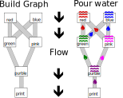
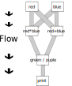

2. Introduction to TensorFlow
What is Tensorflow?
- 텐서플로우는 계산을 위한 라이블러리이다.
- 텐서란 멀티디메셔널 어레이(다차원 행렬)를 의미한다.
- flow 는 흐른다는 느낌이다.
- 텐서플로우는 이름에서 보듯이 텐서가 흐르는걸 의미한다.
TODO:
텐서플로우를 물이 흐르는 길을 파고 그 위에 실제 물을 흘리는 모습으로 묘사해보자.
텐서를 물이라고 생각해보자.
물을 원하는 방향으로 흐르게 하기 위해서는 일단 길을 파야한다.
그 길 위에 물을 부으면 이미 파둔 길을 따라 물이 흐른다.
물이 합쳐지기도 하고 섞이기도 하면서 새로운 물로 변해 마지막에 다다른다.

무엇으로 구성되어 있는가?
- 텐서플로우는 계산을 한다.
- 계산을 하기위해서는 특정 계산을 정의하고 실행 해야 한다.
- 텐서플로우는 계산들을 단 방향 그래프로 정의한다.
- 그리고 정의 된 단 방향 그래프를 실행해 결과값을 구한다.
텐서플로우는 2개의 구성 요소를 가진다.
- 계산 그래프를 정의 하는 라이블러리.
- 정의된 그래프를 실행 시켜주는 런타임 환경(여러 하드웨어에서 동시적으로 돌릴수 있다.)
계산 그래프는 무엇인가?
계산을 단방향 그래프로 추상화 한것을 의미한다.
- 그래프는 2가지로 구성되어 있다. 바로 edge 와 node 이다.
- edge 는 다차원 행렬(tensor)에 대응한다.
- node 는 텐서를 생성 또는 특정 규칙으로 조작한다.(Ops)
Example of Computational Graph
아래의 계산 그래프 정의 코드는 다음과 같은 단방향 그래프로 만들어 질수 있다. (텐서는 런타임에 흐른다.)
red = 1
blue = 2
green = red * blue
pink = red + blue
purple = green / pink
print(purple)

단방향 그래프로 얻을 수 있는 것들.
- 의존성을 고려한 스케쥴링을 할 수 있다.
- 위의 그래프로에서 $a*b$ 와 $a+b$ 는 의존성이 없기 때문에 동시에 스케쥴링 할 수 있다.
- $a * b$ 의 결과만 얻고 싶을 경우 $a*b$ 만 실행 할 수 있다.
- 의존성이 없는 그래프를 다른 머신에 스케쥴링 할 수 있다.
텐서플로우 operation
왜 필요 한가?
- 텐서플로우는 그래프를 정의 하는 곳과 실행되는 곳이 다르다.
- 즉 언어에서 제공하는 일반적인 변수, 분기문, for문등을 사용 할 수 없다.
- 그렇다면 위의 기능이 필요한 상황이 오면 어떻게 할것인가?
해결책
텐서플로우의 노드는 ops 라고 위에서 정의했다. 해당 노드 즉 ops 사용 해서 위의 필요를 만족시켜 주면 된다.
- Variable ops: 전체 런타임 환경에서 공유 가능하고 변경 할 수 있는 영속적 변수
- Conditional ops: 다른 부분에 의해 분기되는 계산 처리.
- Loop ops: 반복 계산
- Control ops: 두개의 ops 들의 계산 순서를 강제
- Queue ops: 비동기 계산을 위해 사용.
정의와 실행
모든 텐서플로우는 두개의 단계로 이루어 진다. - 그래프를 정의하는 단계(tf.Graph) - 물길을 파는 단계 - 정의된 그래프를 실행하는 단계 (tf.Session) - 파진 물길을 따라 물을 흘리는 단계
텐서 플로우 언어
텐서플로우의 백단은 cpp 로 만들어져 있다. 하지만 텐서플로우는 편의를 위해 python, cpp 등 여러 언어 인터페이스를 제공한다. cpp 함수에 사용될 값을 파이썬으로 제공해 준다고 생각하면 기존 파이썬 프로그래밍과 텐서플로우의 이질감을 조금 줄일 수 있다.
Variable
Definition
전체 런타임 환경에서 공유 가능하고 변경 할 수 있는 영속적 변수 - 정의 할때 name, type, shape, and initialization procedure 을 변경 할 수 있다.
v = tf.get_variable(
"name",
dtype=tf.float32,
shape[2, 2],
initializer=tf.random_normal_initializer(stddev=0.5)
)
Use
다른 텐서 처럼 사용하면 된다.
y = tf.matmul(v, tf.constant([[1,2], [3,4]]))
Assign
변수의 값을 변경 하려면 할당해줘야 하고 할당된 값은 다음 업데이트 까지 값을 유지 한다.
increment_op = v.assign(v + 1) # syntax 1
increment_op = tf.assign(v, v + 1) #syntax2
Initialization
변수 값들은 특정 session 안에서만 유지 되며 변수를 사용하기 위해서는 최초에 1회 초기화 해주어야 한다.
create graph() # including variables
init = tf.global_variables_initializer() # 한번에 모든 변수 초기화
with tf.Session() as session:
session.run(init)
Working with data
데이터를 읽어 그래프에게 주어야 할 경우가 있다. 만약 데이터가 작다면 우리는 그래프 정의시점에 데이터를 (메모리에 로딩해) 상수로 정의 할 수 있다.
d = tf.constant(<some numpy arrary>)
데이터가 메모리보다 크다면 에러가 발생 됨으로 추천 하지 않는다. 또한 그래프 정의를 저장 할 때 데이터도 저장 됨으로 위의 방식을 사용하지 말자.
Placeholders and Feeds
그렇다면 그래프를 정의 할 때 가 아닌 런타임에 필요 할 때 데이터를 주게 해보자. 그래프를 만들어야 함으로 어떤 데이터가 들어온다고 정의한 객체(placeholder) 를 사용하고 실제 런타임에 feed_dict 을 사용해서 데이터를 전달하자.
a = tf.placeholder(tf.float32, [])
b = tf.constant(1.0)
c = a + b
with tf.Session() as session:
print(session.run(c, feed_dict={a: 3.0}))
print(session.run(c, feed_dict={a: 4.0}))
텐서플로우는 플레이스 홀더를 사용 할 경우 session.run 할 때 numpy array 로 구성된 dictionary 데이터 구조가 들어온다고 기대한다. - 로드, 전처리, 배치, 큐잉등 마음대로 하면된다.(자유도가 높다.) - 또한 파일, 스트림등 반복되는 작업은 tf.data 에서 이미 내장된 함수로 제공하고 있다.
예제
간단한 선형 함수를 배우는 예제를 구현해 보자. 한개의 변수만 있는 회귀 함수를 배운다고 해보자. $f(x): R \to R$
우리는 해당 함수가 선형이라고 가정한다. $y = wx + b$ 그렇다면 우리가 찾는 식은 아래의 식을 만족하는 $\hat w, \hat b$ 를 찾으면 된다. $$ \hat w, \hat b = argmin_{w, b}\left(\frac{\sum(y_{i} - wx_{i} + b)^{2}}{N}\right) $$ 우리가 사용하는 데이터셋도 선형식 으로 수렴 한다고 가정한다. 다른 말로 우리는 mean squared error (MSE) 를 만족하는 $\hat w, \hat b$를 찾을 것이다.
푸는 방법
위의 식은 방정식으로 바로 풀거나 경사 하강법(gradient descent)을 사용 할 수 있다. $$ \begin{align} \hat w = & \frac{\sum_{i}(x_{i} - \bar x)(y_{i} - \bar y)}{\sum_{i}(x_{i} - \bar x)^{2}} \\ \hat b = & \bar y - w \bar x \\ \bar x = & \frac{\sum_{i}x_{i}}{N} \\ \bar y = & \frac{\sum_{i}y_{i}}{N} \\ \end{align} $$ 일반적으로 복잡한 문제에서 방정식으로 구하기 어려운 경우가 많다. 그러므로 우리는 아래의 경사 하강법을 사용할 것이다. $$ w_{t+1} = w_{t} - \alpha \frac{\partial MSA}{\partial w_{t}} \\ b_{t+1} = b_{t} - \alpha \frac{\partial MSA}{\partial b_{t}} $$ 경사하강법이란 로스 펑션(여기서는 MSA)의 미분값을 파라미터에서 지속적으로 적용해서 파라미터가 수렴 할때까지 반복하는 방법을 말한다.
데이터를 만들어보자.
1차원 데이터를 만들자. 데이터를 만들때 x 값은 range(20) = [0,1,..,19] 를 사용하고 y 값은 $y = wx + b + \eta $ 여기서 $\eta$ 은 정규분포의에서 mean = 0, std = 1 을 사용해 랜덤하게 더 할 것이다.
Automatic Differentiation
경사 하강법은 미분을 필요로 하고 composition function 의 경우 chain rule 사용해 미분을 해야한다. 텐서 플로우는 시스템에서 자동으로 미분식을 제공 해준다.
Gradients
tf.gradients 함수를 이용해서 경사 하강법을 사용하자.
grads = tf.gradients(my_tensor, var_list)
- grads 안에는 len(var_list)의 길이와 같은 텐서가 들어있다. 이 텐서 각각의 var_list 의 변수를 my_tensor 편미분한 식이다.
- 만약 var_list 안에 my_tensor 에 의존 하지 않는 변수가 있다면 grads 의 해당 값은 None 이다.
Loss function
# ytf 와 model_output 으로 MSA loss function 을 만들어라.
loss = tf.losses.mean_squared_error(ytf, model_output)
# 로스 펑션에 대해서 w, b 에 대한 편미분 함수를 만들어라.
grads = tf.gradients(loss, [model.w, model.b])
update_w = tf.assign(model.w, model.w - 0.001 * grads[0])
update_b = tf.assign(model.b, model.b - 0.001 * grads[1])
update = tf.group(update_w, update_b)

Optimizer
update 관련 작업도 tf.train.Optimizer 로 추상화 되어 있다. 아래와 같이 사용 하는걸 권장하며 자매품 AdamOptimizer, RMSPropOptimizer 도 있다.
loss = tf.losses.mean_squared_error(ytf, model_output)
update = tf.train.GradientDescentOptimizer(learning_rate=0.001).minimize(loss)
Control Logic
- tf.control_dependencies: 노드 사이에 의존성을 추가.
- tf.conf: true/false 분기
- tf.case: multi-case 분기
- tf.while_loop: while loop
이해하기는 어렵지만 RL을 위해서 꼭 필요함.
Control dependencies
x = tf.get_variable('x', shape=(), initializer=tf.zeros_initializer())
assign_x = tf.assign(x, 10.0)
# z = tf.assign(x, 10.0) + 1.0
z = x + 1.0
with tf.train.MonitoredSession() as sess:
print(sess.run(z))
# 결과 값은 1.0 and assing_x 는 z 에 의존성이 없음으로 실행 안됨
with tf.train.MonitoredSession() as sess:
print(sess.run([assign_x, z]))
# 텐서 플로우는 fetchs 리스트에 인덱스 순서대로 실행하지 않음!
# 결과 값은 (10.0, 1.0) 또는 (10.0, 11.0) 이됨 assign_x 와 z 가 레이스 컨디션이 됨.
with tf.control_dependencies([assign_x]):
z = x + 1.0
with tf.train.MonitoredSession() as sess:
print(sess.run(z))
# z 를 assign_x 에 의존 하도록 설정했기 때문에 z 를 실행하면 assign_x 가 먼저 실행됨. 11.0
Conditional evaluation.
v1 = tf.get_variable('v1', shape=(), initializer=tf.zeros_initializer());
v2 = tf.get_variable('v2', shape=(), initializer=tf.zeros_initializer());
switch = tf.placeholder(tf.bool)
cond = tf.cond(switch,
lambda: tf.assign(v1, 1.0), # true
lambda: tf.assign(v2, 2.0)) # false
with tf.train.MonitoredSession() as sess:
sess.run(cond, feed_dict={switch: False})
print(sess.run([v1, v2])) # [0.0, 2.0]
v3 = tf.get_variable('v3', shape=(), initializer=tf.zeros_initializer());
v4 = tf.get_variable('v4', shape=(), initializer=tf.zeros_initializer());
switch = tf.placeholder(tf.bool)
assign_v3 = tf.assign(v3, 1.0)
assign_v4 = tf.assign(v4, 1.0)
# 컨디션을 만들기 위해 필요한 의존성은 먼저 실행된다.
# 즉 assign_v4 와 assign_v4 는 cond 를 만드는대 필요함으로
# 해당 op 를 만드는 위의 두개의 할당문이 실행된다.
cond = tf.cond(switch,
lambda: assign_v3,
lambda: assign_v4)
with tf.train.MonitoredSession() as sess:
sess.run(cond, feed_dict={switch: False})
print(sess.run([v3, v4])) # [1.0, 1.0]
While
k = tf.constant(2)
matrix = tf.ones([2, 2])
condition = lambda i, _: i < k
body = lambda i, m: (i+1, tf.matmul(m, matrix))
final_i, power = tf.while_loop(
cond=condition,
body=body,
loop_vars=(0, tf.diag([1., 1.]))
)
# loop 1
# i = 0 => i = 1
# m * matrix => m
# [[1, 0] [[1, 1] [[1, 1]
# [0, 1]] * [1, 1]] => [1, 1]]
# loop 2
# i = 1 => i = 2
# m * matrix => m
# [[1, 1] [[1, 1] [[2, 2]
# [1, 1]] * [1, 1]] => [2, 2]]
# i < 2 break;
with tf.train.MonitoredSession() as sess:
print(sess.run([final_i, power])) # [2, [[2, 2], [2, 2]]]
Dynamic Unrolling
딥러닝과 RL 에서 특정 상태에 같은 transformaion 을 해서 누적 시키는 행위는 자주 일어난다. 예를들어
- Time series prediction
- Sequence to sequence models
- Take decisions in partially observable domains
텐서 플로우에서 ad-hoc 유틸리티 함수를 제공한다.
예제 Fibnacci number
위의 누적 예제로 피보나치 수열을 들어보자. 피보나치 수열은 $0, 1, 1, 2, 3, 5.. $ 같은 수열을 말한다. 초기값 (0, 1) 을 주면 다음 수부터는 이전 두 수의 합으로 다음 수를 구 할 수 있다. 즉 이전 두개의 상태값만 기억하면 되는것이다. $$ F_{0} = 0, F_{1} = 1, \\ F_{n} = F_{n-1} + F_{n-2}, \\ \text{for } n > 1. $$
def fibonacci(state):
output = state[0] + state[1]
return output, (state[1], output)
state = (0, 1) # (f_{0}, f_{1})
for item in range(10):
output, state = fibonacci(state)
#f_n, (f_{n-2}, f_{n-1})
print(output)
# 알고리즘은 위와 같고 텐서 플로우 구현은 아래 코드를 참조하자.
Advanced Features
텐서 플로우는 위에 설명 말고도 많은 다른 기능들을 제공한다. 런타임 라이블러는 아래와 같은 기능도 제공한다.
- 멀티코어 CPU 에서 멀티 쓰레드 실행을 할 수 있다.
- GPU 에서 계산을 시킬 수도 있다.
- 분산 환경에서 여러 머신에 걸쳐 실행 시킬수도 있다.
Annotate 를 그래프에 명시해주면 위의 기능들을 텐서플로우가 알아서 처리해준다.
with tf.device("/cpu:0"):
a = tf.assign(..)
b = tf.assign(..)
with tf.device("/gpu:0"):
c = tf.matfmul(a, b)
with tf.Session() as sess:
sess.run(c)
할당하지 않아도 gpu 가 가능하면 gpu 에서 실행 한다.